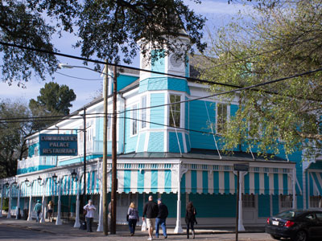
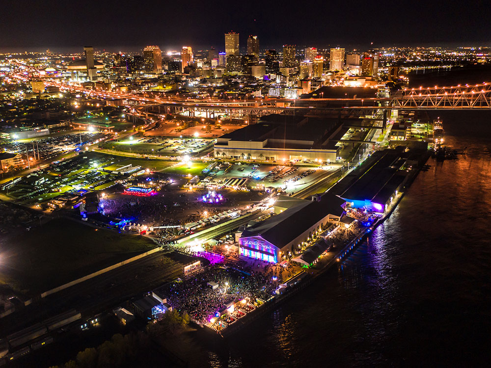
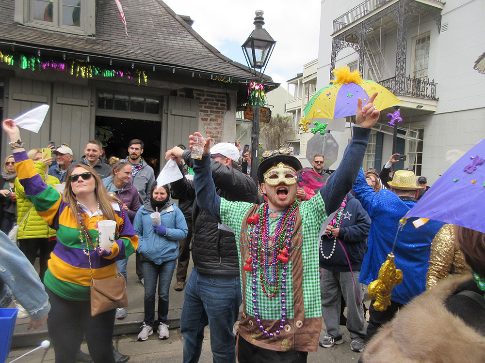
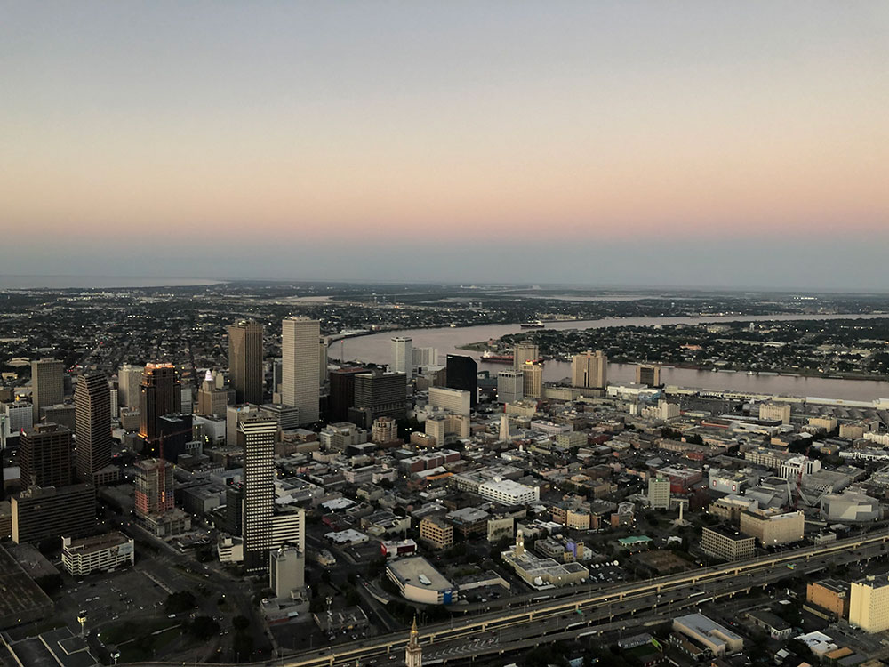

New Orleans Travel Guide
City located along the Mississippi River in the southeastern region of Louisiana is the most populous city in Louisiana and is world-renowned for its distinctive music, Creole cuisine, unique dialects, and its annual celebrations and festivals, most notably Mardi Gras
Top Locations


Places to See in New Orleans
Algiers Point
Location on the Lower Mississippi River in New Orleans emphasizing historic and aesthetic aspects of the neighborhood's houses and other assets
Audubon Park
City park located in the Uptown neighborhood of New Orleans
Audubon Zoo
Expansive wildlife park featuring exotic animals, immersive natural habitats, and interactive exhibits designed to educate and inspire visitors of all ages.

Backstreet Cultural Museum
Small museum preserving and showcasing the vibrant traditions of African American parading culture through costumes, films, and community artifacts.
Basin St. Station
Historic welcome center offering cultural exhibits, a rooftop venue, and visitor services in a restored railway station.
Bonnabel Hill
Scenic lakeside park featuring a boat launch, dog park, walking trails, and recreational amenities for families and outdoor enthusiasts.
Breakwater Park
Lakeside green space offering walking paths, benches, and panoramic views of Lake Pontchartrain and the Causeway Bridge.
Bucktown Marsh Boardwalk
Elevated wooden boardwalk winding through a restored marshland with bird blinds, educational signage, and panoramic lakefront views.
Carousel Gardens Amusement Park
Family-friendly amusement park featuring classic rides, a historic carousel, and seasonal events nestled within a lush urban park setting.
Chalmette Battlefield
Historic battlefield commemorating the final major conflict of the War of 1812 with interpretive trails, monuments, and a visitor center.

Dan Soto, CC BY-SA 3.0, via Wikimedia Commons; Image Size Adjusted

Commanders Palace
Louisiana Creole restaurant in New Orleans, Louisiana, established in 1893 in the Garden District of Uptown New Orlean
Confederate Memorial Hall Museum
Museum housing one of the largest collections of Civil War artifacts in the United States, with exhibits focused on Confederate history and memorabilia.
Congo Square
Historic open plaza known for its cultural significance as a gathering place for African and Creole traditions that shaped the roots of American music.
Degas House
Historic Creole mansion offering guided tours, art exhibits, and bed-and-breakfast accommodations in the former home of French Impressionist Edgar Degas.
Free People of Color Museum
Historic house museum preserving the legacy, culture, and contributions of free people of color in New Orleans through guided tours and curated collections.
French Quarter
Oldest neighborhood in the city of New Orleans that the city developed around after it was founded in 1718 by Jean-Baptiste Le Moyne de Bienville
Garden District
Historic neighborhood distinguished by grand antebellum mansions, tree-lined streets, and ornate gardens showcasing 19th-century architectural styles.
Harmony Circle
Urban green space within a historic traffic circle offering public art, cultural significance, and access to nearby museums and galleries.
Historic Dufour-Plassan Home
Elegant 19th-century residence known for its cornstalk and sunflower ironwork, reflecting New Orleans’ Creole architectural heritage.
JAMNOLA
Immersive art experience featuring 29 interactive exhibits that celebrate New Orleans culture through music, food, fashion, and local creativity.
Lafayette Cemetery No. 1
Historic cemetery in the Garden District neighborhood of New Orleans, founded in 1833 and still in use today
Lafayette Square
Historic 2.5-acre public park featuring shaded walkways, mature trees, and prominent statues that serves as a venue for concerts, festivals, and civic gatherings.
Lake Lawn Metairie Funeral Home and Cemeteries
Expansive historic cemetery and funeral home complex featuring grand mausoleums, landscaped grounds, and notable burials reflecting New Orleans’ cultural legacy.
Lakeshore Park
Lakefront green space offering walking paths, picnic areas, and panoramic views of Lake Pontchartrain along scenic Lakeshore Drive.
Longue Vue House and Gardens
Historic estate featuring a Classical Revival mansion and eight acres of themed gardens, offering guided tours, cultural programs, and seasonal events.
Louis Armstrong Park
Public park honoring the legacy of jazz and its cultural roots, featuring sculptures, green spaces, and historic Congo Square in the Tremé neighborhood.
Louisiana Civil Rights Museum
Interactive museum chronicling Louisiana’s role in the Civil Rights Movement through multimedia exhibits, personal stories, and historical artifacts.
Louisiana State Museum
Network of historic museums showcasing Louisiana’s diverse cultural, political, and artistic heritage through permanent and rotating exhibitions.
Loyola University
Private Jesuit university featuring historic architecture, a vibrant academic community, and a scenic campus known for its strong liberal arts, business, music, and professional programs.
Luling Mansion
Lavish 19th-century Italianate mansion once home to the Louisiana Jockey Club, now a private residence with a storied past and striking architecture.
Sergey Galyonkin, CC BY-SA 2.0, via Wikimedia Commons; Image Size Adjusted

Mardi Gras
Carnival celebration culminating on the day before Ash Wednesday featuring lavish floats, parades, throws and masked balls
Mardi Gras World
Behind-the-scenes attraction showcasing the artistry and craftsmanship of Mardi Gras through massive parade floats, props, costumes, sculptures, and working studios where New Orleans carnival traditions come to life.
Marigny Opera House
Former church transformed into a performing arts venue offering ballet, music, and theatrical productions in a historic architectural setting.
Museum of Southern Jewish Experience
Interactive museum exploring the cultural, religious, and social contributions of Jewish communities across the American South through exhibits, artifacts, and personal stories.
National WWII Museum
Expansive history museum featuring immersive exhibits, artifacts, personal narratives, restored military equipment, and multimedia experiences that explore the American experience during World War II.
New Canal Lighthouse
Historic lighthouse and museum offering interactive exhibits on coastal restoration, maritime history, and environmental science along the shores of Lake Pontchartrain.
New Orleans Botanical Garden
Expansive garden featuring themed plant collections, art deco architecture, and immersive exhibits including a tropical rainforest and historic train garden.
City Park
Expansive urban green space featuring centuries-old live oak trees, landscaped gardens, lakes, and diverse recreational and cultural attractions.
New Orleans Museum of Art
Renowned art museum featuring global collections spanning 4,000 years, with rotating exhibitions, educational programs, and a scenic sculpture garden.
Ogden Museum of Southern Art
Museum dedicated to the art and culture of the American South, featuring rotating exhibitions, educational programs, and a permanent collection of regional works.
Pitot House Museum
Creole colonial home offering guided tours that explore 19th-century architecture, furnishings, and the legacy of New Orleans’ first American mayor.
Sazerac House
Interactive cocktail museum and distillery offering complimentary tours, tastings, and exhibits on the history and craft of New Orleans’ signature spirits.
St Charles Streetcar
Historic streetcar line featuring vintage rail cars traveling through oak lined avenues, passing historic mansions, parks, and university campuses.
Infrogmation of New Orleans, CC BY-SA 4.0, via Wikimedia Commons; Image Size Adjusted

St Louis Cemetery
Three Catholic cemeteries where most of the graves are above-ground vaults constructed in the 18th and 19th centuries with St. Louis Cemetery No. 1 being the oldest and most famous
Storyland
Whimsical outdoor playground featuring life-sized storybook sculptures and interactive exhibits inspired by classic fairy tales and nursery rhymes.
Sydney and Walda Besthoff Sculpture Garden
Expansive outdoor sculpture garden featuring over 90 works of modern and contemporary art set among lagoons, live oaks, and winding footpaths in a natural landscape.
West End Park
Scenic waterfront park offering shaded walking paths, picnic areas, and views of Lake Pontchartrain in a peaceful marina district setting.
Overview
New Orleans, Louisiana's largest city and a major port on the Mississippi River near the Gulf of Mexico, is world-renowned for its music, Creole and Cajun cuisine, architecture and annual celebrations, most famously Mardi Gras. Nicknamed the "Crescent City" for the river's curve through downtown and "The Big Easy" for its laid-back reputation, it has about 370,000 residents and a metropolitan area of roughly 1.3 million. The city is often called the most unique in the United States because of its cross-cultural, multilingual heritage, which blends French, Spanish, African, Caribbean and American influences, and it is the birthplace of jazz and a cultural capital of the South. It is also one of the nation's major ports and a center for energy, shipping and tourism.
People come to New Orleans to wander the historic French Quarter, hear live jazz and brass bands, eat beignets, gumbo and po' boys, celebrate Carnival, tour its above-ground cemeteries and take a streetcar through the Garden District. The city's festivals, nightlife, architecture and storytelling traditions, with a reputation for ghosts, voodoo and the supernatural, attract visitors from all over the world, and many leave saying it feels like nowhere else in America. The city is compact, walkable and welcoming, and its easygoing attitude, summed up in the motto "laissez les bons temps rouler" (let the good times roll), invites travelers to slow down and enjoy.
New Orleans was founded in 1718 by Jean-Baptiste Le Moyne de Bienville and the French Mississippi Company, on a crescent-shaped bend of the river where the land was high enough to build, and was named for the Duke of Orléans. France ceded it to Spain in 1763, and the Spanish rebuilt the city after devastating fires in 1788 and 1794, which is why much of the French Quarter looks Spanish. Napoleon regained the territory, then sold it to the United States in the Louisiana Purchase of 1803. Andrew Jackson won the Battle of New Orleans in January 1815 at Chalmette, and by the mid-19th century New Orleans was among the largest and busiest ports in the country, as well as the nation's largest slave market, and was home to a large community of free people of color. Union forces captured the city in 1862. The city's red-light district of Storyville and the dance halls of the early 20th century helped give birth to jazz. Its low-lying position between the Mississippi River and Lake Pontchartrain has long made it vulnerable to flooding, most catastrophically during Hurricane Katrina in 2005, which flooded about 80% of the city; since then, major rebuilding efforts have driven a strong cultural and economic recovery.
The French Quarter, or Vieux Carré, is the historic heart of New Orleans and one of the most famous neighborhoods in the United States. Laid out in 1721, it features narrow streets, Creole townhouses, courtyards and wrought-iron balconies, mostly of Spanish colonial design. At its center is Jackson Square, framed by St. Louis Cathedral, the oldest continuously active cathedral in the United States, and the Cabildo and Presbytère museums, with artists, tarot readers and street performers gathered along the fence. Nearby are the French Market, Café du Monde, famous for beignets and chicory coffee since 1862, the Old Ursuline Convent, the Pharmacy Museum, Lafitte's Blacksmith Shop Bar, the Woldenberg Park riverfront and the steamboat Natchez. Royal Street is known for antiques and art galleries, and the Quarter's many ghost, vampire and voodoo tours add to its mystique.
Bourbon Street, named for the French royal House of Bourbon, not the whiskey, is the French Quarter's famous party street, about 13 blocks long and lined with bars, music clubs, restaurants, balconies and souvenir shops. The street is known for its open-container laws, which allow visitors to carry drinks outside, for neon lights, strip clubs, daiquiri shops, hand grenades and hurricanes, and for its late-night, anything-goes energy. Vehicles are blocked in the evening so that crowds can walk freely. The street is lively around the clock, and it is quieter, cleaner and better for historic sightseeing in the morning and afternoon, while the nights are rowdy, crowded and noisy, particularly on weekends and during Carnival, so keep an eye on belongings. For a more local feel, walk a few blocks to Frenchmen Street in the Marigny, which many New Orleanians prefer for live music. Pat O'Brien's, home of the Hurricane cocktail, is a block away, and the Carousel Bar at the Hotel Monteleone is a classic.
Mardi Gras ("Fat Tuesday") is the climax of the Carnival season, which begins on Twelfth Night, January 6, and ends on the day before Ash Wednesday, falling between early February and early March. The celebration includes more than a hundred parades put on by social clubs called krewes, with elaborate floats, marching bands and masked riders throwing beads, doubloons and trinkets to the crowds. Highlights include the Rex parade, which crowns the King of Carnival, the Zulu parade, famous for its hand-decorated coconuts, and the super krewes Bacchus, Endymion and Orpheus. Other traditions include king cake, the Mardi Gras Indians, costumes and masks, and the colors purple, green and gold. Visitors who can't make it to Carnival can tour the float warehouse at Mardi Gras World or visit the Mardi Gras Museum of Costumes and Culture. Book hotels many months ahead; prices rise and many streets are closed during the peak weekends.
New Orleans is the birthplace of jazz, created in the late 19th and early 20th centuries from a blend of African rhythms, European instruments, blues and ragtime, with gathering places such as Congo Square and pioneers like Buddy Bolden, Jelly Roll Morton and Louis Armstrong, who was born in the city. Live music fills the city every night, from the traditional jazz of Preservation Hall, the Spotted Cat and Snug Harbor on Frenchmen Street, to brass bands, blues, R&B, funk, zydeco and rock in clubs such as Tipitina's and the Maple Leaf Bar. "Second line" parades follow brass bands through the streets on Sundays, and the Tremé neighborhood is the historic heart of the Black Creole community and home of Louis Armstrong Park. The New Orleans Jazz Museum and the New Orleans Jazz National Historical Park interpret the music's history. Major festivals include the French Quarter Festival in April, the New Orleans Jazz & Heritage Festival ("Jazz Fest") in late April and early May, and Essence Festival of Culture in the summer.
Because of the city's high water table, most dead are laid to rest in above-ground tombs, creating the atmospheric "Cities of the Dead." St. Louis Cemetery No. 1, founded in 1789 on the edge of the French Quarter, is the oldest and most famous, and holds the tomb of voodoo queen Marie Laveau, the tomb of civil rights figure Homer Plessy and a pyramid purchased by actor Nicolas Cage. The cemetery is only open to visitors on guided tours, so book in advance. Lafayette Cemetery No. 1, established in 1833 in the Garden District, is known for its elegant tombs and live oaks and has appeared in many films and in the novels of Anne Rice; check its status before visiting, as it has closed from time to time for restoration. A third option is Metairie Cemetery, with its grand mausoleums. Respect the sites, as these are still working cemeteries and places of burial.
Beyond the French Quarter, top attractions include the National WWII Museum, the St. Charles Streetcar, the oldest continuously operating streetcar line in the United States, which runs past the mansions of the Garden District, Commander's Palace and Audubon Park; Canal Street; the Vue Orleans observation deck; the Sazerac House; Algiers Point, reached by a ferry across the Mississippi; and the Caesars Superdome. Magazine Street offers miles of boutiques, galleries and restaurants, the Marigny and Bywater are arts-minded neighborhoods, and Bayou St. John is a scenic waterway. History fans can visit the Chalmette Battlefield, where the 1815 Battle of New Orleans was fought.
The National WWII Museum is consistently ranked among the best museums in the country. The Louisiana State Museum operates the Cabildo and the Presbytère on Jackson Square, with exhibits on Louisiana history and Mardi Gras, and the New Orleans Museum of Art in City Park and the Ogden Museum of Southern Art are the leading art museums. Others include the Besthoff Sculpture Garden, the Backstreet Cultural Museum on Black masking traditions, the Free People of Color Museum, the Louisiana Civil Rights Museum, the Degas House, Longue Vue House and Gardens, the Museum of Southern Jewish Experience, the Historic New Orleans Collection and the Southern Food and Beverage Museum. The city also has a lively opera, symphony and theater scene.
City Park, at about 1,300 acres one of the largest urban parks in the country, is shaded by some of the oldest and largest live oak trees in the world, some more than 800 years old, and includes the New Orleans Museum of Art, the Besthoff Sculpture Garden, the Botanical Garden, Carousel Gardens Amusement Park and Storyland. Audubon Park is a leafy park across from Tulane and Loyola universities, with a walking path and the Audubon Zoo. Others include Louis Armstrong Park, Woldenberg Park along the river, Lafayette Square, Lakeshore Park and West End Park on Lake Pontchartrain, and the Bucktown Marsh Boardwalk.
New Orleans is one of the great food cities in the world. Its Creole cuisine blends French, Spanish, African, Caribbean and Native American influences, and alongside it is Cajun cooking from Acadiana. Restaurants are institutions here: Commander's Palace, a Garden District landmark since 1893; Galatoire's; Antoine's, the oldest family-run restaurant in the country and creator of Oysters Rockefeller; Arnaud's; Brennan's, which invented Bananas Foster; and Dooky Chase's, the legendary Creole restaurant of Leah Chase, are among the many that have won national acclaim and James Beard awards. Foods invented or popularized in New Orleans include gumbo, jambalaya, étouffée, red beans and rice, beignets, the po' boy and muffuletta sandwiches, pralines, king cake, Oysters Rockefeller, Bananas Foster, turtle soup and boiled crawfish, plus cocktails such as the Sazerac, Hurricane, Ramos Gin Fizz and Vieux Carré. The city has a large Vietnamese community that serves excellent pho and banh mi, along with Honduran, Italian, Lebanese and Mexican options. The city's chefs and restaurants are best known for their many James Beard Foundation awards.
The New Orleans Saints (NFL), Super Bowl XLIV champions after the 2009 season, play at the Caesars Superdome, and the New Orleans Pelicans (NBA) play at the Smoothie King Center next door. The Superdome has hosted the Super Bowl several times, most recently Super Bowl LIX in 2025, and hosts the Sugar Bowl, one of college football's oldest bowl games, each New Year's. College sports are led by the Tulane Green Wave and the UNO Privateers, and the Fair Grounds Race Course, one of the oldest horse tracks in the country, runs the Louisiana Derby. The city also hosts the Crescent City Classic road race, NCAA Final Fours and other major events.
Some of the best experiences lie outside the city. Along the Mississippi River west of New Orleans, Plantation Country (often called "Plantation Alley") has historic estates such as Oak Alley Plantation, famous for its avenue of 300-year-old live oaks, Whitney Plantation, which tells the story of slavery from the perspective of the enslaved, Laura Plantation, Destrehan Plantation, Houmas House and St. Joseph Plantation. Swamp and bayou tours by boat or airboat offer a chance to spot alligators, herons and turtles, particularly in the Honey Island Swamp and the Barataria Preserve of Jean Lafitte National Historical Park, where boardwalk trails wind through cypress swamp. Others include the Lake Pontchartrain Causeway, one of the world's longest bridges over water, and the state parks of the Greater New Orleans area. Farther west, Cajun Country around Lafayette, about two and a half hours away, offers swamp tours, Acadian culture, zydeco music and the Tabasco Factory, and Baton Rouge is about 80 miles upriver.
Sources: This article uses material from the Wikipedia articles "New Orleans" and "History of New Orleans", which are released under the Creative Commons Attribution-Share-Alike License 3.0. Additional information from New Orleans & Company, Mardi Gras New Orleans, National Park Service: New Orleans Jazz National Historical Park and Jean Lafitte National Historical Park and Preserve, Archdiocese of New Orleans, The National WWII Museum, City of New Orleans, the National Weather Service New Orleans/Baton Rouge, the James Beard Foundation and the official websites of the attractions, museums and teams mentioned.



